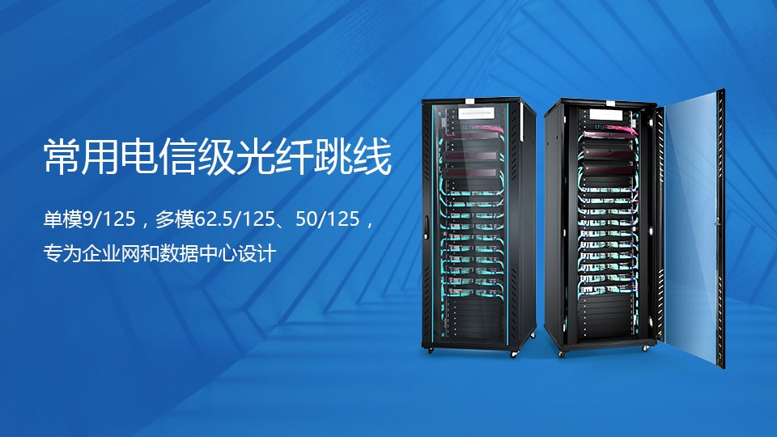
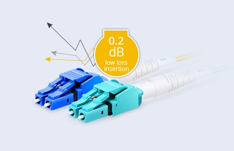
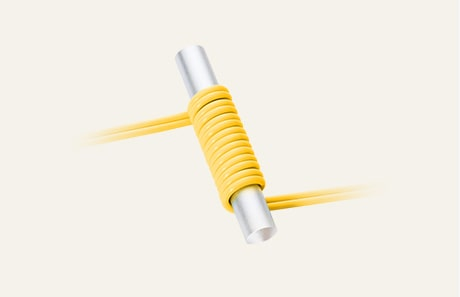
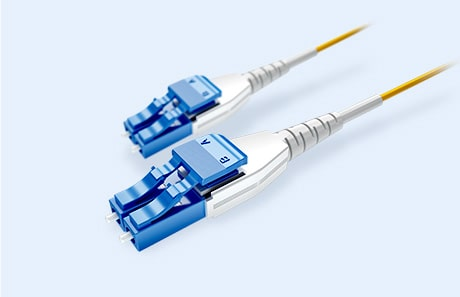

常用电信级光纤跳线
单模9/125，多模62.5/125、50/125，专为企业网和数据中心设计

为什么选择飞速(FS)光纤跳线？
飞速(FS)提供的高品质Senko极性转换连接头和康宁弯曲不敏感纤芯确保跳线具有低插损和高回损。
同时，我们通过了多种质量体系验证，如ISO9001和RoHS，并建立了国际标准化的质量保证体系。
-

Senko极性转换连接头
一管双芯光纤跳线
-

康宁弯曲不敏感光纤
超低损耗
-

超高密度光纤跳线
扁平卡扣一管双芯光纤跳线
光纤跳线选购指南
以下列举了不同的光纤跳线类型和一般应用，帮助客户根据具体的应用需求选购跳线。
-
-
标准光纤跳线
- ●标准光纤跳线用于光纤布线系统中的互连和交叉连接
- ●光纤尾纤用于光纤拼接和熔接
- ●室内/室外多芯光纤用于干燥管道和室内连接
- ●铠装光纤跳线用于恶劣的室内环境
-
-
-
数据中心升级光纤跳线
- ●B级BIF弯曲不敏感康宁光纤跳线确保良好的随机弯曲性能
- ●扁平卡扣型uniboot跳线可节省更多空间和简化线缆管理
- ●推拉式uniboot光纤跳线更易安装和拆卸
- ●Senko极性转换uniboot跳线无需任何工具即可切换极性
-
飞速(FS)光纤跳线测试中心
飞速(FS)提供的每一条光纤跳线都严格经过一系列全面的诊断来测试其优良性能。
在我们的检测中心，从受专业培训的测试员到先进的测试设备，我们专注每一个细节，以确保客户收到品质优良的光纤跳线。
光纤跳线端面/3D干涉仪/IL/RL测试视频
该视频展示了光纤跳线的端面、3D干涉仪、插入损耗和回波损耗在测试台进行检测的流程。 飞速(FS)所有的光纤跳线都要经过测试台全面检测，其中3D干涉仪主要用于测试MTP/MPO光纤跳线， IL和RL测试主要针对常规光纤跳线、Uniboot跳线和铠装跳线。
进入飞速(FS)检测中心全球仓储体系
飞速（FS）正在全球范围内建立仓储中心，截至2017年已经在亚洲、欧洲和北美建立了自己的本地仓库，与此同时，更多的仓储中心正在切实推进中。
全球仓储建设是为了实现全球范围内的极速发货，提高客户的快速到货体验。

美国

英国

德国

中国

澳大利亚

新加坡